Elenco Masculino do Corinthians (2026) ⚽
Técnico: Dorival Júnior
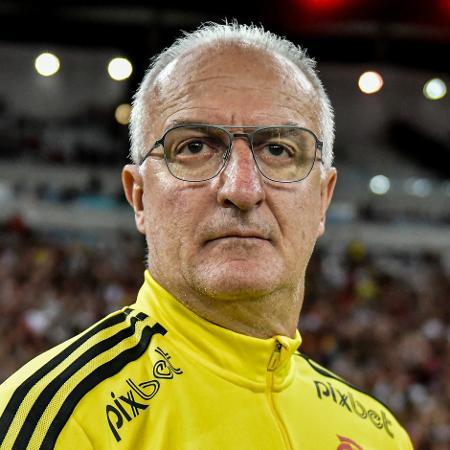
Funções principais por posição:
Goleiros:
Hugo Souza, Matheus Donelli, Felipe Longo, Kauê
Responsáveis por defender a meta, iniciar jogadas com reposição de bola e organizar a defesa.
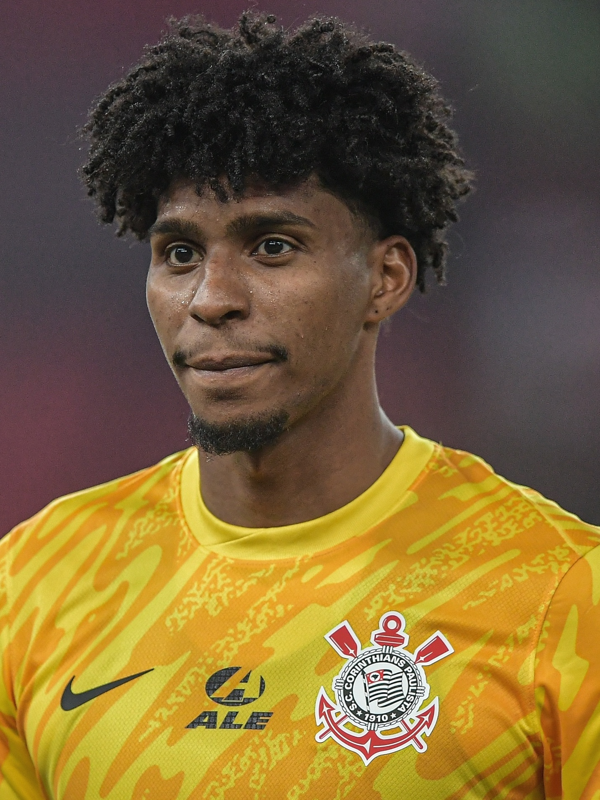

 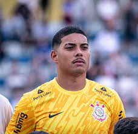
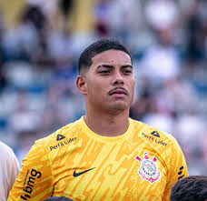
Defensores:
Laterais:
Matheus Bidu, Matheuzinho, Pedro Milans, Hugo
Apoiam o ataque pelas laterais e fazem cobertura defensiva.
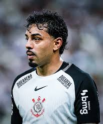
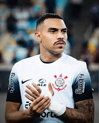
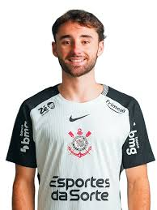

Zagueiros:
André Ramalho, Cacá, Félix Torres, Gustavo Henrique, Gabriel Paulista, João Pedro
 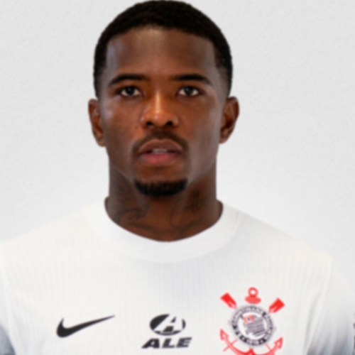
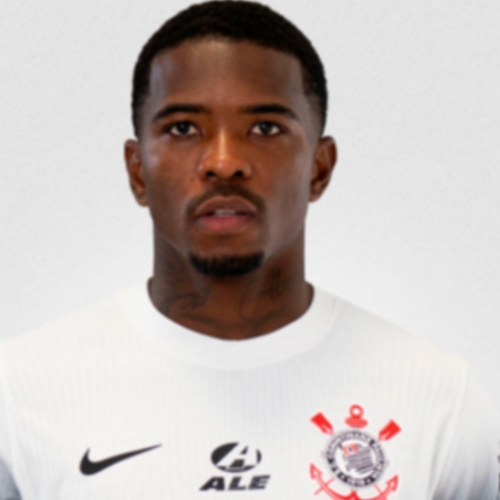
 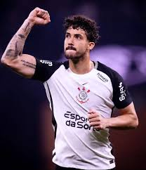
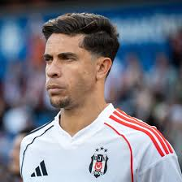
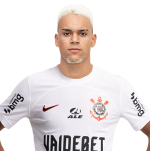
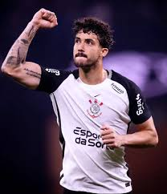
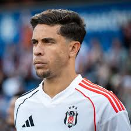
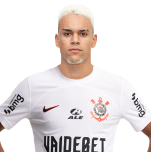
Meio-campistas:
Volantes:
Alex Santana, Raniele, Charles, José Martínez, Breno Bidon
Protegem a defesa, recuperam bolas e distribuem passes.

 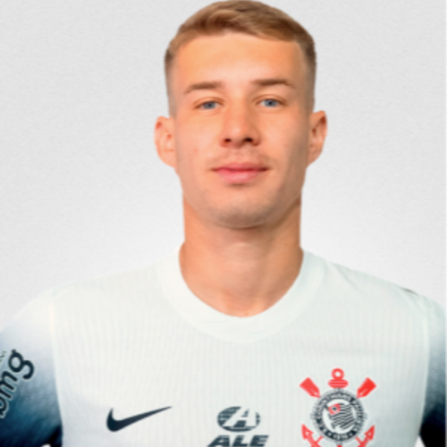
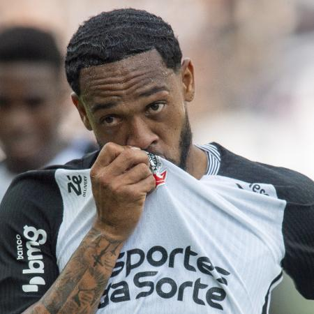
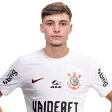
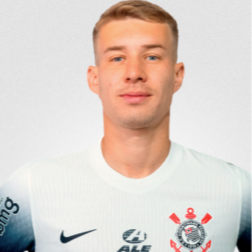
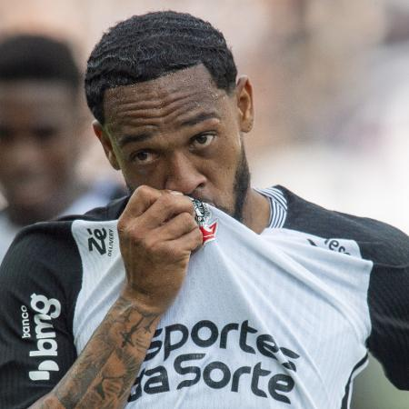
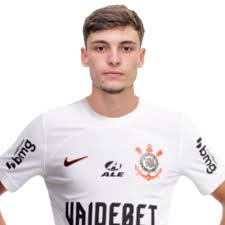
Meias ofensivos:
Rodrigo Garro, Dieguinho, Gui Amorim
Criam jogadas, articulam o ataque e servem os atacantes.
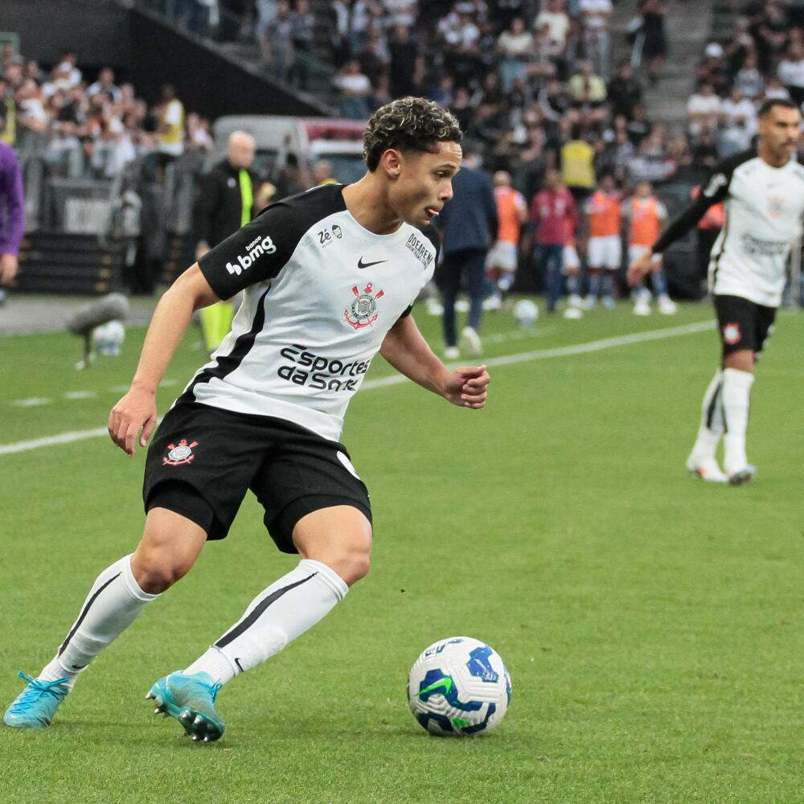
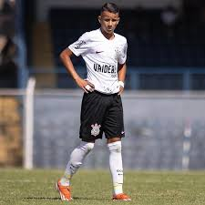
Atacantes:
Centroavantes:
Yuri Alberto, Pedro Raul
Finalizam jogadas e atuam como referência na área.
 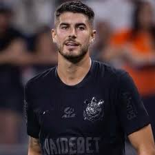
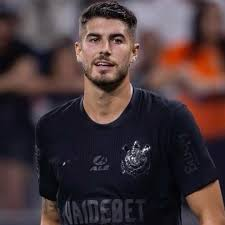
Pontas/atacantes móveis:
Memphis Depay, Vitinho, Kayke, Gui Negão
Exploram velocidade, dribles e cruzamentos.
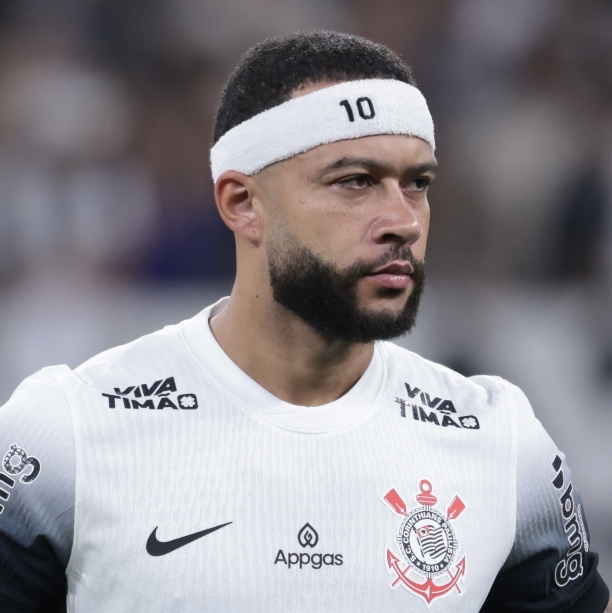
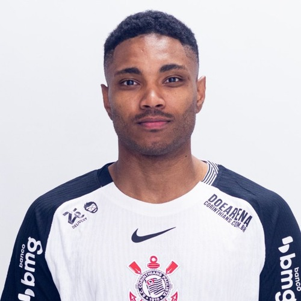
 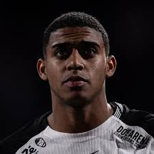
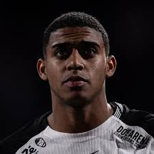
Elenco Feminino do Corinthians (2026) ⚽
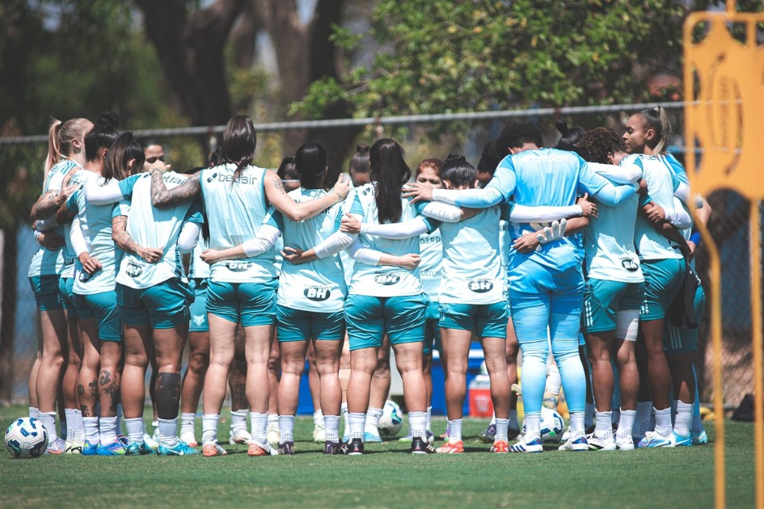
Técnico: Lucas Piccinato
Total: 34 Jogadoras
Goleiras
Função: defender a meta, organizar a defesa e iniciar jogadas.
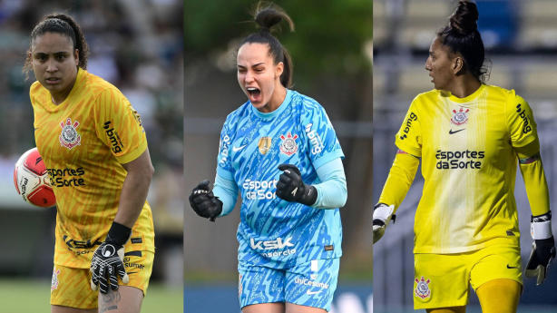
Defensoras
Zagueiras:
Agustina (reforço), outras atletas da base – marcam atacantes adversárias e dão segurança defensiva.
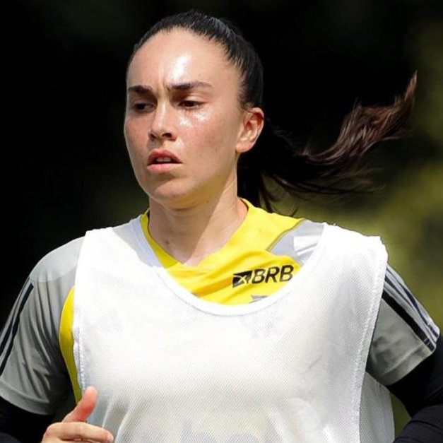
Laterais:
jogadoras experientes e jovens promovidas – apoiam o ataque e fazem cobertura defensiva
Meio-campistas:
Ana Vitória, Paola García (reforços), além de outras como Mayara e Tamires (quando recuada) – responsáveis pela criação de jogadas, passes e marcação no meio.
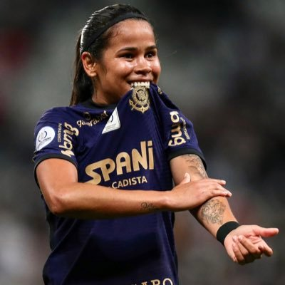
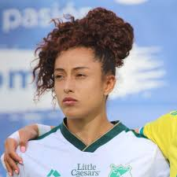
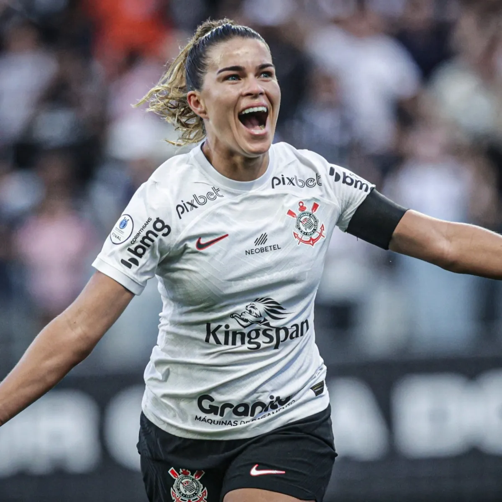